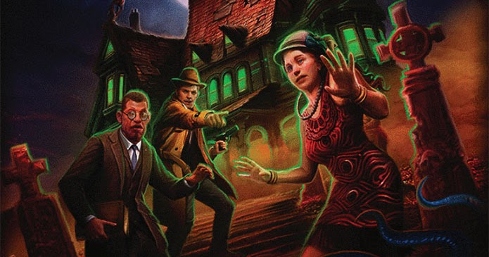

Ghosttech
GhosttechWhat is Ghosttech:
We are a blog/store/newscenter focused on helping and centering Ghost and Demon hunters.
For the longest time, Exorcists and other shadowhunters are left in the dark about the risks and strategies of their craft. So, the main goal of Ghosttech is to provide a space for them to come and discuss everything paranormal. Here you can find sales of artifacts recently acquired by Ghosttech, and know if Ghosttech is available on your dimension! See more on the "Our rules of sevice section"